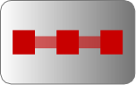

NUMERIC ELEMENTS
Software Development and Research in Applied Mathematics
Control over the oscillations of a curve
An interactive demonstration
Move the B-spline control points to navigate in a curve space with an upper limit on the number of
curvature extrema
and
inflections
.
Disable the
controls
as needed to introduce oscillations.
 : Add more control points around a selected one to add flexibility and degrees of freedom to the curve.
Curvature extrema
Inflexions
Sliding
Please use a browser that supports "canvas"